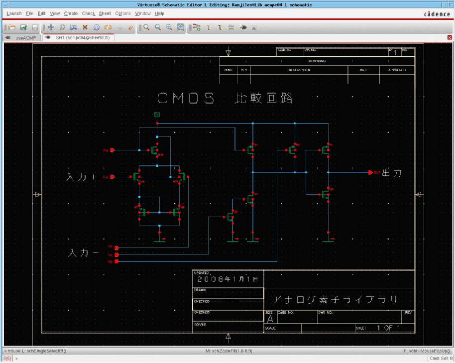
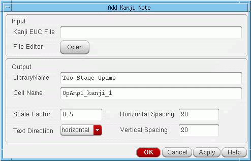
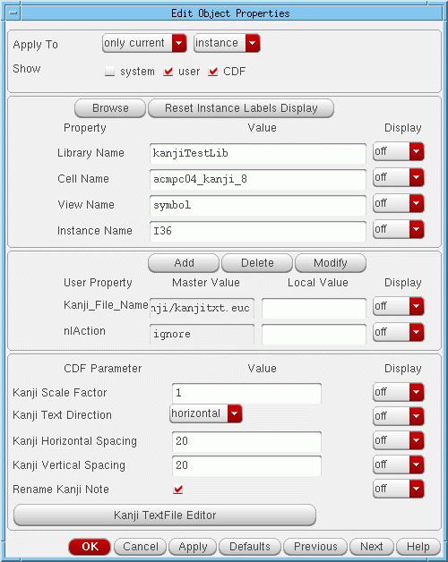

E
Configuring and Using Kanji Notes
The Virtuoso® Schematic Editor provides a user interface that lets you create or modify EUC-packed format kanji files.
Based on the information in a kanji file, the software generates a symbol cellview that contains kanji character graphics. You can then add documentation to your schematics by placing an instance of the symbol.
You can configure your system to access the Create – Note – Kanji Note menu option for instantiating kanji note symbols in your schematic design.
The following topics are covered in this chapter.
Configuring Your System
To enable the user interface to use kanji notes you need to perform the following actions:
Specifying the Kanji Editor
The value of the invokeKanjiEditor environment variable determines which kanji EUC text editor you access from the user interface.
schematic invokeKanjiEditor string "kterm -km euc -e vi"
If the default value does not work for your system, change the default setting in your .cdsenv or .cdsinit file.
Testing the Default Setting
To test whether the default value works for your system,
If a kanji editor opens, the default value works for your system.
Configuring the Kanji Menu Command
The Create – Note – Kanji menu option is added using the enableKanjiNotes environment variable.
A bindkey (Shift<Key>k) is also available, and both this and the enableKanjiNotes envar value can be set in your .cdsenv or .cdsinit prior to loading the sample bindkeys.
-
.cdsenv:schematic enableKanjiNotes boolean t
-
.cdsinit:envSetVal("schematic" "enableKanjiNotes" boolean t) load( prependInstallPath( "samples/local/schBindKeys.il" ))
Figure E-1 Kanji Note Example
Using Kanji Notes
The Create – Note – Kanji Note command lets you create symbol cellviews containing kanji characters that you can instantiate in your schematic design.
The general procedure for creating and placing a kanji note is as follows:
-
Use a kanji text editor to create or edit a kanji EUC-formatted file.See also Specifying the Kanji Editor.
- Generate a symbol cellview based on the information in the Japanese EUC-formatted file.
- Add an instance of the symbol cellview to your design.
Formats, Files, and Views
You use Create – Note – Kanji Note to open a kanji text editor, which you then use to create a Japanese EUC packed (multiple-width) formatted file.
After you quit the kanji text editor, you click on the OK or Apply button on the Add Kanji Note form. The software will then:
The symbol cellview contains the graphics that represent the characters described in the EUC file. The software draws each character in the symbol by referencing the X and Y coordinates, which are stored in the two kanji vector files.
The kanji cellview, which the software stores in your library, contains an exact copy of the information in the source Japanese EUC packed (multiple-width) formatted file. Because this copy resides in your library, you can use the schematic editor, whenever you wish, to change the file and regenerate the associated symbol and any instances.
Adding a New Note
The basic procedure for adding a new kanji note to your schematic is to generate a new symbol and place an instance in your design. There are two ways to generate a new kanji note symbol:
Generating a Symbol from an Existing File
To generate a new kanji note symbol based on an existing Japanese EUC packed (multiple-width) formatted file,
-
From the schematic window, choose Create – Note – Kanji Note.
The Add Kanji Note appears.
Figure E-2 The Add Kanji Note Form - In the Kanji EUC File field, type the name of the existing EUC file.
- (Optional) Change the default kanji note display parameters.
-
Click OK.
The software will then: -
Move your cursor into the schematic.
A box that represents the instance of the kanji note symbol is bound to your cursor. -
Place the symbol instance by clicking in the schematic.
The kanji note appears where you click your mouse. The Add Instance command remains active. -
Press the
Esckey to end the Add Instance command.
The Add Instance form closes.
Generating a Symbol from a New File
To generate a new kanji note symbol based on a new Japanese EUC-packed (multiple-width) formatted file:
-
From the schematic window, choose Create – Note – Kanji Note.
The Add Kanji Note form appears. -
In the File Editor field, click Open.
The software initializes the form with a filename and the kanji text editor opens the new file. - In the kanji text editor, enter your kanji text, save the file, and quit the kanji text editor.
- (Optional) Change the default kanji note display parameters.
- Click OK. The software will then:
- Move your cursor into the schematic. A box that represents the instance of the kanji note symbol is bound to your cursor.
-
Place the symbol instance by clicking in the schematic.
The kanji note appears where you click your mouse. The Add Instance command remains active. -
Press the
Esckey to end the Add Instance command.
The Add Instance form closes.
Editing an Existing Note
To change an existing kanji note symbol and all instances of the note:
-
Select the instance object in your schematic.
The software highlights the object. -
From the schematic window, choose Edit – Properties – Objects.
The Edit Object Properties form appears.
The form displays the current display parameter settings as CDF values and provides access to the Kanji TextFile Editor.
Figure E-3 Edit Object Properties Form with Kanji Fields - (Optional) Open the Kanji TextFile Editor, change the kanji note text, and close the editor.
-
The software updates the kanji cellview.
You will not see any change in the Edit Object Properties form.
You will not see any change in the schematic editor window until you click OK or Apply in the Edit Object Properties form. -
(Optional) On the Edit Object Properties form, change the parameter values.
You will not see any change in the schematic editor window until you click OK or Apply in the Edit Object Properties form. -
Click OK or Apply.
Limitations
You should consider the following limitations when working with kanji notes.
- You can use scale factor values of less than 1.0 to create smaller characters. However, due to round-off errors, scale factor values of less than 0.25 might make many characters unreadable.
- Each kanji character is converted into many lines in a symbol cellview. Therefore, very large EUC files result in symbols that require huge amounts of memory, which can slow redraw speeds significantly.
- The following character sets are not used often and are not supported in either the software or the vector files:
- The conversion program reads only the first 5,000 characters in an EUC file.
- If there are errors in the EUC file, the conversion program generates error messages for only the first 20 errors. The conversion process continues, however, until the program reaches the end of the EUC file or the 5,000-character limit.
-
Japanese EUC packed (multiple-width) formatted files are not deleted automatically.
After you generate the symbol and kanji cellviews, the files you create with the kanji text editor are no longer needed. Although they do not take up much disk space, you should periodically remove them to maintain a clean file system.
Return to top